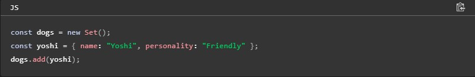
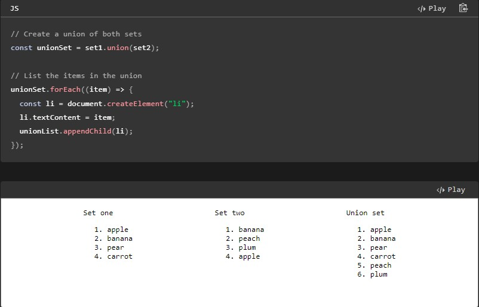
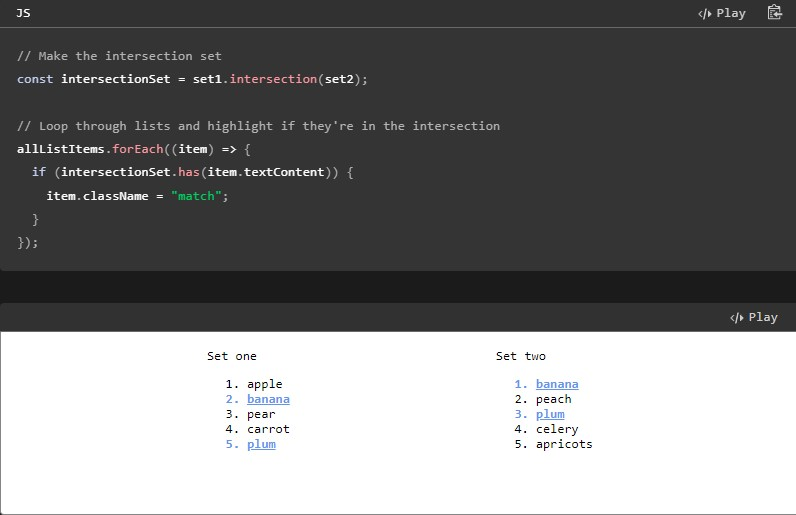
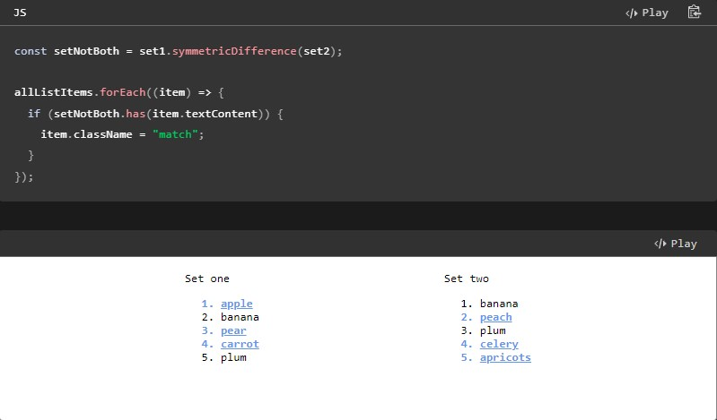
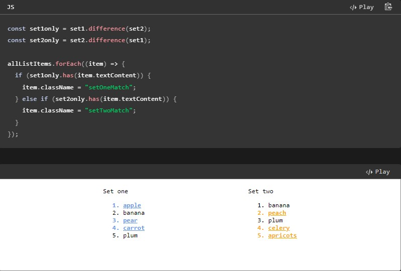
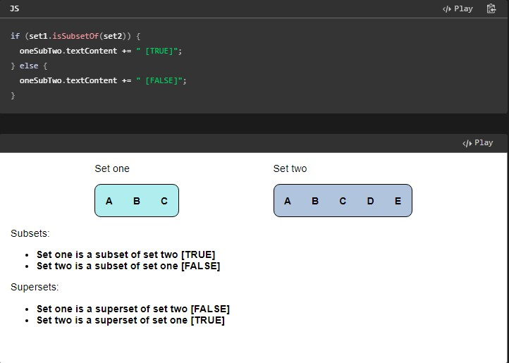
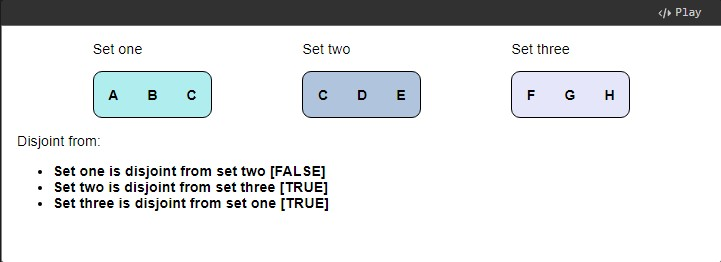

New JavaScript Set methods are arriving! Since Firefox 127, these methods are available in most major browser engines, which means you won't need a polyfill to make them work everywhere.
This article is a good read for people who are new to Set in JavaScript and are looking to find out how to use these new JavaScript methods. I'll highlight some advantages of using these methods with basic examples to show why you might reach for these instead of building your own implementations.
What's new in Set methods?
For those of you looking for the TL;DR, here's the gist of new methods that have cross-browser support:
-
intersection()returns a new set with elements in both this set and the given set. -
union()returns a new set with all elements in this set and the given set. -
difference()returns a new set with elements in this set but not in the given set. -
symmetricDifference()returns a new set with elements in either set, but not in both. -
isSubsetOf()returns a boolean indicating if all elements of a set are in a specific set. -
isSupersetOf()returns a boolean indicating if all elements of a set are in a specific set. -
isDisjointFrom()returns a boolean indicating if this set has no elements in common with a specific set.
If you've read (or skimmed) through the above list and are confused, don't worry, we'll describe what they do in the following sections. Each of these methods are used to check what the contents of sets are compared to the contents of another specific set.
What is a JavaScript Set?
A set is similar to an
Array, except that each value can only be stored once.
For example,
we can take a list of items, add them all to a set, and then inspect
the results of the set.
The list on the right is the
contents of the list on the left, but converted to a set. We have all
duplicates removed from the list because we're guaranteed that a set
is unique:
This might not look like much in a small example such as this, but it's really convenient to have a built-in way to make unique collections of items, especially over larger data and more complex data types and objects. For example, consider that you can add elements to a set like so:
It's also typically faster to check if an element is in a set as opposed to in an Array, so this fits use cases where you need to keep an eye on performance in larger data sets. You can also compose new sets with specific logical properties based on existing sets, and we'll take a look at some examples of that below.
We'll be covering all of the new methods below, but if you want to see everything you can do with a Set, check the Instance methods documentation.
Union of two sets
This is a good example to start us off if you're not familiar with sets. With the union, we can check what elements are in 'either or both' sets. In the example below, we have two lists and we want to make a third one that contains all items from both lists, but without duplicates:
We're using the HTML textContent of each list item so we have sets of strings, but you can see how this can be powerful if we consider that sets can contain data types like arrays or objects.
This is helpful because we don't need any custom implementations to remove duplicates, do equality checks, or make other comparisons. Once we have elements in a set, we know they're all unique, and the union method is an optimized way to make a third set of (unique) items that appear in 'either or both' sets.
Set intersection
With set intersection, we can check what elements occur in both sets to see what the overlap is. In this example, instead of displaying the intersection set as a third list like we did with union above, we can use it to highlight elements that are 'both sets only':
Set symmetric difference
Before we look at difference, let's look at symmetricDifference which might sound complex, but hopefully the example below demystifies that. What the symmetric difference does is lets us check which elements are in either set, but not both.
If this is all new and you're struggling to understand, compare the symmetric difference with the intersection example. You should see that the symmetricDifference method does the opposite logical operation of the intersection.
Set difference
With set difference, we can check which elements are in one set but not in another. For this example, we are creating two new sets instead of one. The first one (set1only) is created with set1.difference(set2) and what we get back is a new set of items that are 'set one only'. We do the same with the new set set2only to find items that are in set two but not in the first one. For each list, we can use the sets created with difference to highlight list items that don't appear in the other list.
Subset, superset, and disjoint from
The last of the new methods and concepts that we can explore are subset, superset, and 'disjoint from' methods. By now, you're familiar with the set operations that return new sets. The subset, superset, and disjoint from methods don't return new sets, but a Boolean value to indicate certain state or logical checks.
The first two we can look at are subset and superset. Instead of highlighting list items, we have some statements or assertions like "Set one is a subset of set two". We then add some text (TRUE / FALSE) to the list item depending on the result of a check like if (set1.isSupersetOf(set2)):
So with subset, we can check if all the items from a set appear in another set or not. With superset, we're doing the opposite, to see if a set has all items from another set, plus some additional items.
The last method for us to look at is isDisjointFrom() where we can find out if two sets have no common elements. The first and second sets below are not disjoint from each other as they have one element ("C") in common. The third set is disjoint from the other two as it has no items in common with either set:
Summary
I hope you enjoyed this post about Set methods and why I think sets are an interesting concept to understand. Do you know different ways to use these methods in real-world examples? Feel free to get in touch with us and let me know what you think or if I've missed something! You should be all Set for your next project, so see you next time!